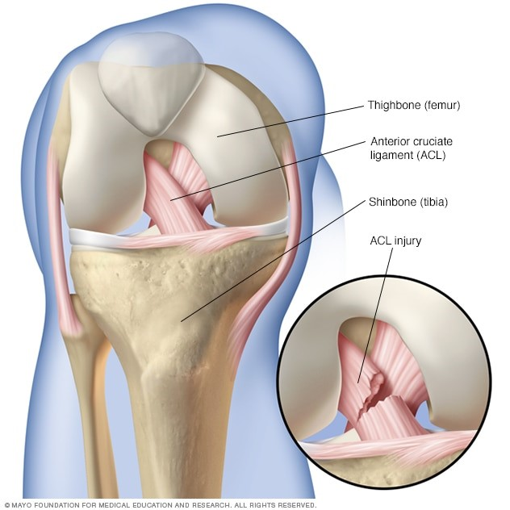

Torn ACL

CAUSES
Athletes often get ACL injuries when they stop and quickly change directions while they’re running. People who play soccer, football, tennis, basketball or volleyball, or who do gymnastics are more likely to twist their knees by mistake when they compete than, say, cross-country runners, who simply move forward at a steady pace. Your speed -- combined with the way that you twist or turn your knee -- makes it likely that you’ll stretch or tear your ACL.
ACL injuries are more common among women than men.
SYMPTOMS
Many people hear a popping noise in their knee when they get hurt. But it doesn’t happen to everyone. More common symptoms include:
- Pain. If you have a minor injury, you may not feel pain. You may feel sore along your knee’s joint line. Some people have trouble standing or putting pressure on the hurt leg.
-
Swelling. This is most likely to happen during the first 24 hours. You can reduce swelling by putting ice on your knee and elevating (raising) your leg by propping it up on a pillow.
-
Trouble walking. If you’re able to put pressure on your hurt leg, you may notice that it’s harder than normal to walk. Some people find that the knee joint feels looser than it should.
DIAGNOSIS
Your doctor will want to hear exactly how you injured your knee. They’ll look at both knees to see if the sore one looks different. They may also order any of the following:
- Tests. Your doctor may ask you to lie on your back and bend your hips and/or your knees at certain angles. They’ll then place their hands on different parts of your leg and gently shift you around. If any of your bones move in a way that isn’t normal, that could be a sign that your ACL is damaged.
-
X-ray. Soft tissues like the ACL don’t appear on X-rays, but your doctor may want to rule out broken bones.
-
MRI or ultrasound. These exams can show both soft tissue and bone. If you have a damaged ACL, it should appear on the images.
-
Arthroscopy. This literally means to “look within the joint.” During the exam, an orthopedic surgeon makes a small cut in your skin. They insert a pencil-sized tool that contains a lighting system and lens (arthroscope) into the joint. The camera projects an image of the joint onto a TV screen. Your doctor can see what type of injury you have and repair or correct it, if needed.
TREATMENTS
It depends on how badly you’ve been hurt. Here are some of the options your doctor may give you
-
First aid. If your injury is minor, you may only need to put ice on your knee, elevate your leg, and stay off your feet for a while. You can reduce swelling by wrapping an ace bandage around your knee. Crutches can help to keep weight off your knee.
-
Medications. Anti-inflammatory drugs can help to reduce swelling and pain. Your doctor may suggest over-the-counter medications or prescribe something stronger. For intense pain, your doctor may inject your knee with steroid medication.
-
Knee brace. Some people with a damaged ACL can get by with wearing a brace on their knee when they run or play sports. It provides extra support.
-
Physical therapy. You may need this a few days a week to get your knee back in working order. During your sessions, you’ll do exercises to strengthen the muscles around your knee and help you regain a full range of motion. You may be sent home with exercise to do on your own.
-
Surgery. Your doctor may tell you that you need this if your ACL is torn badly, if your knee gives way when you’re walking, or if you’re an athlete. A surgeon will remove the damaged ACL and replace it with tissue to help a new ligament grow in its place. With physical therapy, people who have surgery can often play sports again within 12 months.